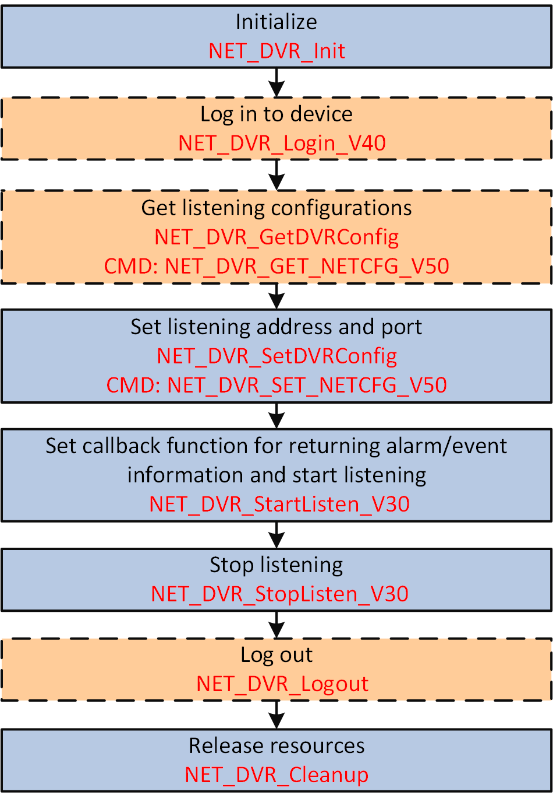

When alarm is triggered or event occurred, the device uploads the alarm/event information automatically, so you can configure the listening address and port for listening and receiving the alarm/event in the secondarily developed third-part platform.
Make sure you have called NET_DVR_Init to initialize the development environment.
Make sure you have configured the alarm/event parameters, refer to the typical alarm/event configurations for details.

Figure 1 Programming Flow of Receiving Alarm/Event in Listening Mode#include <stdio.h>
#include <iostream>
#include "Windows.h"
#include "HCNetSDK.h"
using namespace std;
void main() {
//---------------------------------------
// Initialize
NET_DVR_Init();
//Set connection time and reconnection time
NET_DVR_SetConnectTime(2000, 1);
NET_DVR_SetReconnect(10000, true);
//---------------------------------------
// Log in to device
LONG lUserID;
NET_DVR_DEVICEINFO_V30 struDeviceInfo;
lUserID = NET_DVR_Login_V30("172.0.0.100", 8000, "admin", "12345", &struDeviceInfo);
if (lUserID < 0)
{
printf("Login error, %d\n", NET_DVR_GetLastError());
NET_DVR_Cleanup();
return;
}
//Enable listening
LONG lHandle;
lHandle = NET_DVR_StartListen_V30(NULL,7200, MessageCallback, NULL);
if (lHandle < 0)
{
printf("NET_DVR_StartListen_V30 error, %d\n", NET_DVR_GetLastError());
NET_DVR_Logout(lUserID);
NET_DVR_Cleanup();
return;
}
Sleep(5000);
//Disable listening
if (!NET_DVR_StopListen_V30(lHandle))
{
printf("NET_DVR_StopListen_V30 error, %d\n", NET_DVR_GetLastError());
NET_DVR_Logout(lUserID);
NET_DVR_Cleanup();
return;
}
//Log out
NET_DVR_Logout(lUserID);
//Release SDK resource
NET_DVR_Cleanup();
return;
}
Call NET_DVR_Logout (if logged in) and NET_DVR_Cleanup to log out and release resources.